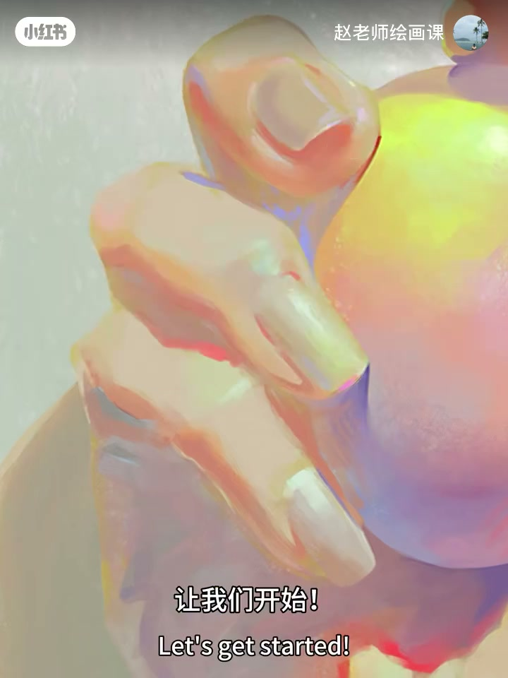
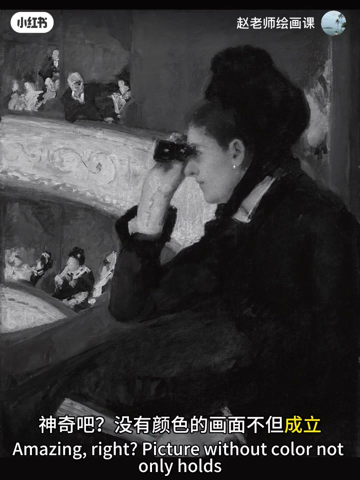
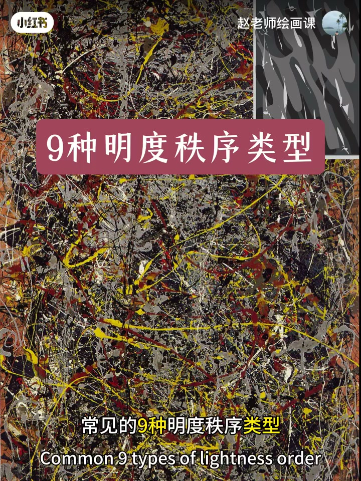
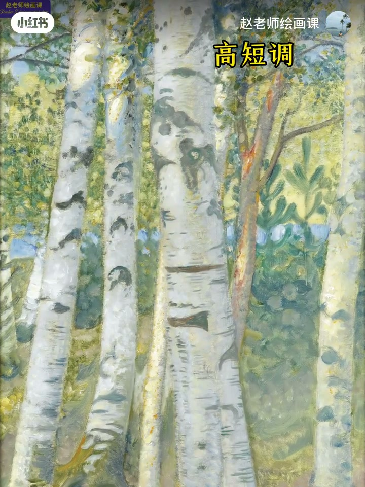
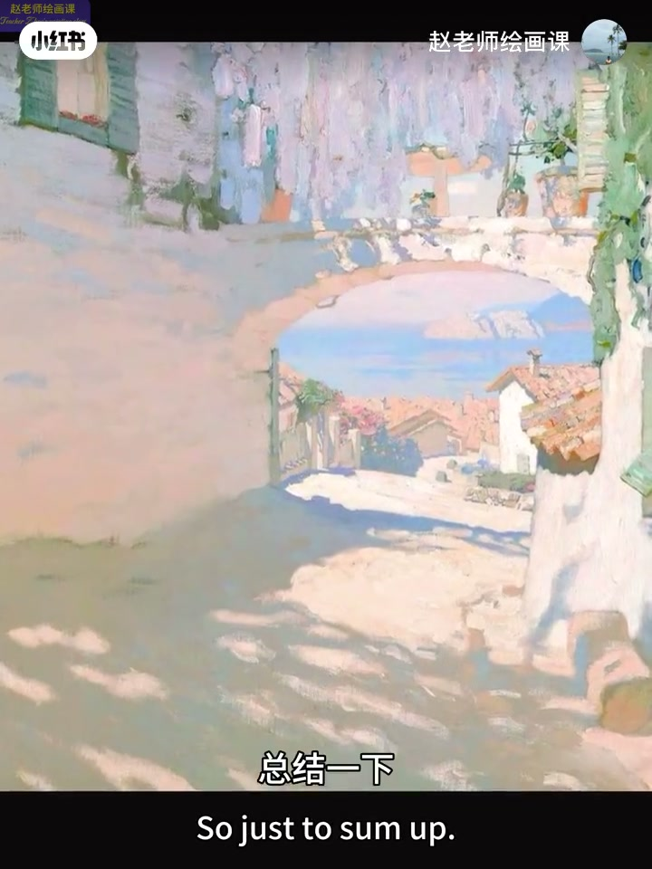

内容要点
色彩好看、光感强、配色高级，努力半天仍画不好——成就一幅画的关键往往是明度秩序。卡萨特包厢去掉颜色仍清晰易读；斯丹娜淡雅风景、波洛克抽象背后都有明度布局。九级明度分高中低大调，再乘长中短局部对比，得九种基本类型。口令：色调的「调」指明度基调，不是色相。
知识结构
卡萨特去色仍成立＝明度秩序力量。
高中低大调×长中短对比。
高长／高中／高短；梵高低中调。
情绪选大调、气质选对比；调＝明度基调。
先排明度再谈好看：定高中低大调，再选长中短对比；没有明度秩序，再鲜的颜色也撑不住画面。
00:00-01:14去色仍成立：明度秩序力量
开场问：为何努力仍画不好？干货向开始。卡萨特1878年剧院包厢：深褐中红中黄联想复古庄重，蓝灰与远处高饱和点缀添活泼。
简单粗暴去掉这些「好颜色」：无色画面不但成立，且清晰易读、重点突出——不同明度色块有序安排如定海神针。斯丹娜室外风景、波洛克纯抽象背后同样有整体明度秩序。00:25／00:58 对照。


01:14-02:19九种明度秩序：大调×对比
明度分九级：一至三低明度区，再中、高；以哪区为主导决定大基调。局部对比：跨五个及以上间距＝强对比／长对比，三至五＝中对比，三个以下＝弱对比／短对比。
高中低大基调×长中短局部对比＝九种基本明度秩序类型。01:36 示意条可核验。

02:19-03:14画作举证：高调与低调
大面积亮＋局部强对比＝高长调，展青春活力；另一幅浅色高调配中对比，恰如其分显典雅；浅色＋弱对比＝高短调，静谧柔和治愈。
梵高《吃土豆的人》低调映射沉重生命，人物幽黑与微弱光芒对比象征眷顾——低中调。时间关系不一一列举。02:50 土豆吃者可指认。

03:14-04:21用法口令：调＝明度基调
大基调：轻盈明快柔美空灵用高调；自然平和真实质朴用中调；力量凝重深邃神秘用低调。局部：青春活力用长调，典雅耐看用中调，营造氛围用短调。
悄悄说：色调中的「调」其实指明度基调而非颜色。不是公式勿死记；感知规律才能看懂再用。预告纯度秩序与课程。03:17 总结卡。

完整转录（128段）
以下文本由 Whisper medium 模型自动转录，可能存在少量识别误差，已尽可能修正。
说起色彩
我们往往以颜色画得好不好看
光感是否强烈精彩
藏色高不高级等为标准
但是努力了半天
还是画不好一张画
为什么
问题出在哪里
今天我们来搞清楚一件事
在色彩上
成就一幅画的关键因素是什么
今天内容特别干
喝口水
坐稳服好
让我们开始
这是卡萨特1878年的画作
在剧院的包厢里
画中表现了一个上流贵族女人
在包厢里用望远镜观看表演的场景
深褐中红中黄的色彩组合
形成了一种复古
庄重高贵的色调联想
蓝干和远处人物衣服中高饱和色的点缀
让画面多了几分活泼的氛围
好
我们现在简单粗暴地去掉这些好感
看看画面是否成立
神奇吧
没有颜色的画面
不但成立
而且清晰易动
重点突出
不同明度色块的有序安排
好似定海神针一般
稳稳地支撑了整个画面
这就是明度秩序的力量
在斯丹娜的这幅室外风景中
虽然画面整体明亮淡雅
但也有清晰的明度布局
即使波罗克的纯抽象风格中
复杂的点线面组合背后
也能清楚地反映出整体的明度秩序
这到了明度的重要性
让我们一起解析常见的
九种明度秩序类型
首先
我们把明度按照从亮到暗
分为九个等级
一至三是低明度区
依次是中明度区
高明度区
以哪个区域色皆为主导色
就会决定画面大的基调
其次
在确定大调的基础上
还细分了局部色块的对比强度
对比跨越五个或以上间距的
为强对比
又叫长对比
三至五个为中对比
三个以下为弱对比
又叫短对比
高中低的大基调
加长中短的局部对比
两者共同作用
形成了九种基本的明度秩序类型
好
让我们在画作中加以理解
这幅作品中
大面积的量对应了高调
与局部的强对比
展示出女性的青春与活力
同样
女性为主的另外一幅中
浅色占比也对应高调
而中对比
恰如其分地展现了女性的点压
在这幅风景中
整体的浅色加局部的弱对比
形成了高短调
体现了自然的静谧
柔和还有治愈感
在繁高的吃土豆的人中
低调的画面
对应的是幽暗的色调气氛
映射出底层人民生命的沉重
人物如土地般幽黑的色彩
与微弱光芒的对比
象征上帝对贫苦者的眷顾
被压抑中注入了一丝温暖和希望
这是繁高笔下的低中调
时间关系我们就不一一列举了
总结一下
在大的基调方面
想要轻盈明快
柔美空灵
用高调
想要自然平和
真实质朴
用中调
想要力量凝重
深邃神秘
用低调
在局部对比方面
想要表现青春活力
用长调
想要典雅耐看
用中调
想要营造氛围
那短调最为合适
是不是已经有了一点感觉
悄悄地告诉你
色调中的调其实指的就是明度基调
而非颜色
以上这些当然不是公式
可别死记硬背
感知明度秩序规律
可以帮助我们看懂画
提高审美能力
只有看懂了
才有会用的可能性
在我即将开班的色彩系统课程中
通过系统知识和针对性作业
让大家从根本学会应用这些色彩原理
详情点击我的主页制定笔记
下一期我们讲纯度秩序
就这样
拜拜